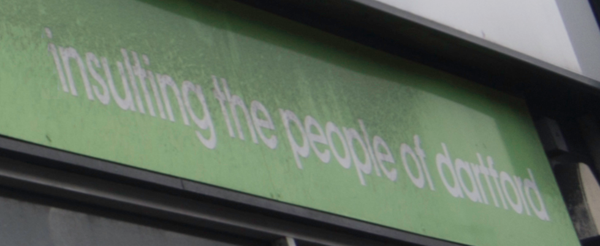

404 Error - No Vision for Dartford Found
No Plan B found either

This is a parody site which is not supported by Tesco, Dartford Borough Council or any associated organisations who are...

This web site is also not supported by any of the above.
This site uses cookies. By continuing to use our website without changing the settings, you are agreeing to our use of cookies.